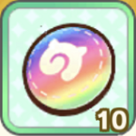
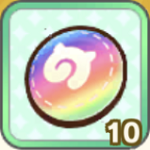
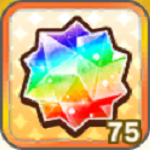
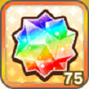
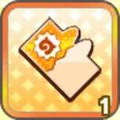
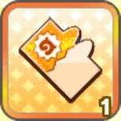

使い方
このリストは、切り替えると「アイテム一覧」の枠内が切り替わります。
「追加」：「アイテム一覧」のアイコンを選択すると「生成ファイル」にアイコンを追加します。
「置き換え」：「アイテム一覧」のアイコンを選択すると「選択中アイテム」を表示します。
「選択中アイテム」表示中に、「生成ファイル」枠内のアイコンを選択すると「選択中アイテム」に置き換えます。
置き換え後の選択解除は、ボタン「選択解除」を押すか、チェックボックス「置き換え後選択解除」にチェックを入れていると自動的に解除します。
「置き換え」：「アイテム一覧」のアイコンを選択すると「選択中アイテム」を表示します。
「選択中アイテム」表示中に、「生成ファイル」枠内のアイコンを選択すると「選択中アイテム」に置き換えます。
置き換え後の選択解除は、ボタン「選択解除」を押すか、チェックボックス「置き換え後選択解除」にチェックを入れていると自動的に解除します。
ボタン「生成」を押すと、「ダウンロードファイル」にダウンロード用のファイルを生成します。ここからダウンロードできます。
ボタン「最後尾のアイコンを削除」:最後に追加したアイコンを削除します。
ボタン「全てのアイコンを削除」:追加してあるアイコン全てを削除します。
ボタン「全てのアイコンを削除」:追加してあるアイコン全てを削除します。
【お問い合わせはこちらまで。】
Twitter：@KM_Paffin_love
「ログボマトメールP」の使い方は、こちら
【関連サイト】
ゆーたさん(@yuta_game_music)作 「オムカエデキールR」
「オムカエデキールR」の使い方は、こちら
Twitter：@KM_Paffin_love
「ログボマトメールP」の使い方は、こちら
【関連サイト】
ゆーたさん(@yuta_game_music)作 「オムカエデキールR」
「オムカエデキールR」の使い方は、こちら
置き換え後選択解除：
空白マスを透過する：
アイテム一覧


 



 



 



選択中アイテム
以下の枠内で置き換える対象アイコンを選択してください。
選択中のアイテム: